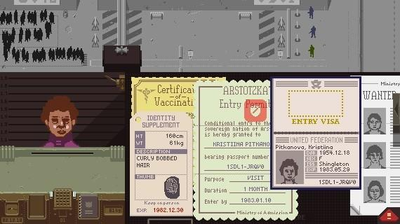
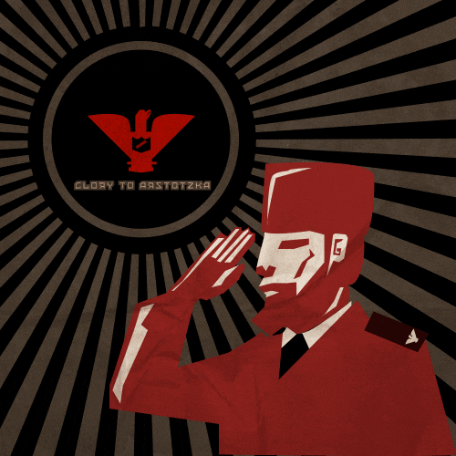

Papers, Please
Papers, Please es un juego que tiene lugar en 1982 después de una guerra
de seis años entre los
estados
ficticios de Arstotzka y Kolechia.
La mecánica del juego se enfoca en la vida laboral de un inspector de inmigración que trabaja para
el
gobierno de Arstotzka en un control fronterizo ubicado entre Arstotzka y Kolechia. El jugador
inspecciona los documentos de los inmigrantes que llegan, teniendo a su disposición varias
herramientas para determinar si los papeles de estos están en orden, todo esto con el objetivo de
mantener fuera del país a personas no deseadas, tales como terroristas, delincuentes, espías o
contrabandistas.

Cuando se descubre alguna discrepancia en algún documento, el jugador puede interrogar al
solicitante sobre esta, y posiblemente exigir más información, como revisar huellas digitales o
hacer un
escáner a cuerpo completo. En ocasiones, el jugador tendrá la oportunidad de arrestar a los
solicitantes
e, incluso, los solicitantes intentarán sobornar al inspector.
Al final de cada día, el jugador gana dinero en función de la cantidad de personas que han sido
procesadas junto con los sobornos recogidos, menos las sanciones por errores. Luego el jugador debe
realizar un presupuesto para saber cómo gastar ese dinero inteligentemente en alquiler, comida,
calefacción, y otras necesidades en materia de vivienda de clase baja para él y su familia.
Como las relaciones entre Arstotzka y los países vecinos están deterioradas (a veces debido a los
ataques terroristas), poco a poco se irán agregando nuevas reglas, tales como negarle la entrada a
ciudadanos de determinados países o exigir documentación actual de los ciudadanos propios. El
jugador es
retado con dilemas morales a medida que progresa en el juego.
